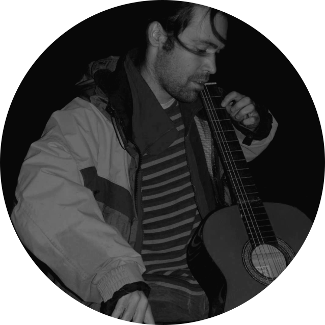

About¶
My name is Essi Parent, the creator behind Djalgo, a toolkit designed to intertwine the precision of mathematics with the artistry of music composition. Standing at the convergence of diverse fields, I blend contemplative creativity, empathetic innovation, and analytical rigor to navigate the complexities of both nature and technology.
With a foundation in ecological engineering, agriculture, data science, and human health, my work embodies an interdisciplinary ethos, leveraging scientific insights to tackle global challenges. Beyond the confines of conventional engineering, I am an algorithmic musician, delving into the symbiosis between technology and art to craft soundscapes that mirror the intricate dance between analytical thought and expressive nuance.
These endeavors in music are not merely artistic pursuits but a profound exploration of how algorithms can capture and convey the essence of human emotion and experience. My journey is one of perpetual learning and discovery, a testament to the power of bridging disparate domains to forge new paths and understandings.
Djalgo is more than a project; it’s a reflection of a lifelong commitment to blending science with art, showcasing the beauty and complexity of the world through the language of music.
Mastodon: @essi@mozilla.social ; ORDID: https://orcid.org/0000-0003-1679-2287

{kind=link}